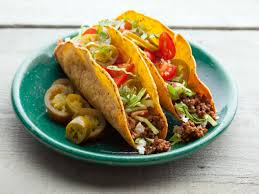

Tacos

Tacos are a beloved Mexican dish consisting of a folded or rolled tortilla filled with various ingredients such as seasoned meat, vegetables, cheese, and salsa. Their versatility and flavor combinations make them a popular choice worldwide, enjoyed for their delicious simplicity and customizable nature.
Ingredients
- Beef
- Shredded lettuce
- Diced Onions
- Taco shells
- Sour cream
- Mexican shredded cheese
- Salsa
- Tomatoes
Directions
- Cook your beef with desired seasonings until fully cooked.
- Warm tortillas on a skillet or in the microwave until soft and pliable
- Fill each tortilla with a portion of the cooked meat.
- Top with desired toppings such as lettuce, tomatoes, onions, cheese, and salsa.
- Serve immediately and enjoy your delicious homemade tacos!